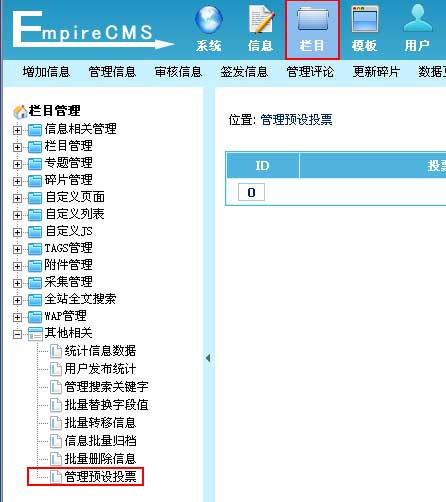
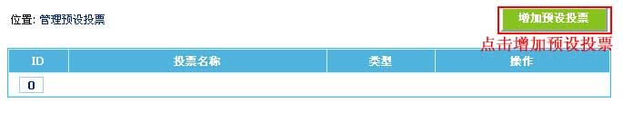
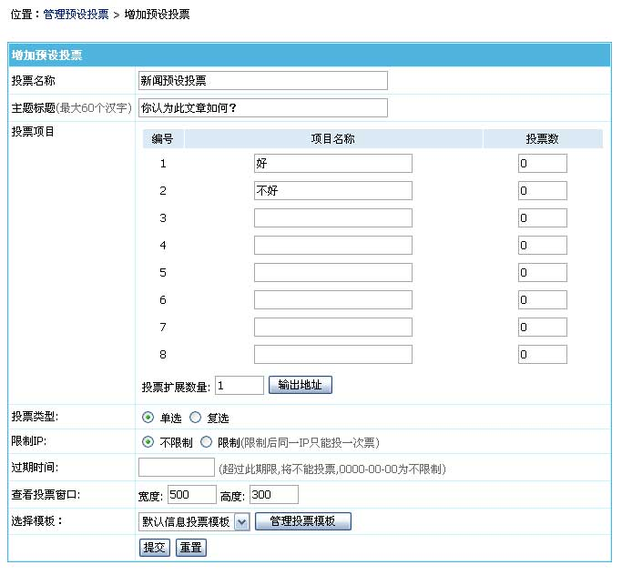
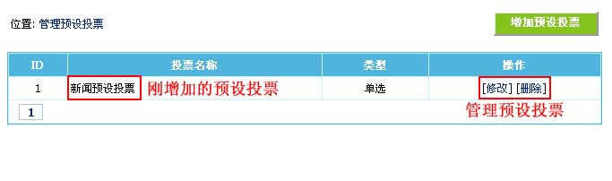

预设投票管理
选择本节内容
> 预设投票介绍
> 增加预设投票
> 管理预设投票
一、预设投票介绍：
预设投票为预先设置信息投票的格式，方便增加信息时设置固定投票选项。可在系统模型或栏目里直接指定信息使用哪个预设投票。
二、增加预设投票：
(一)、登录后台，单击“
栏目
”菜单，选择“
管理预设投票
”子菜单，进入管理预设投票界面：

(二)、“
管理预设投票
”界面 -> 点击“
增加预设投票
”按钮进入增加预设投票界面（见下图）：

(三)、进入增加预设投票界面：

投票名称
填写预设投票的名称。
主题标题
输入投票的主题（60个汉字上限）。
投票项目
输入各投票选项名称，还可预设投票数。不填投票名称表示不使用。
增加投票选项：
当投票选项多于系统默认设置时，可在投票扩展数量选框中输入需增加选项数量，单击“输出地址”按钮，增加投票选项。
投票类型
选择投票是单选投票还是可以多选。
限制IP
选择是否限制同一IP只能投一次票。
过期时间
设置投票过期时间，超过此期限，将不能投票，0000-00-00为不限制。
查看投票窗口
设置查看投票结果窗口显示的宽度及高度。
选择模板
选择投票模板（要选择信息的投票模板）。
三、管理预设投票：
1、增加预设投票后，返回“管理预设投票”界面（见下图）：
